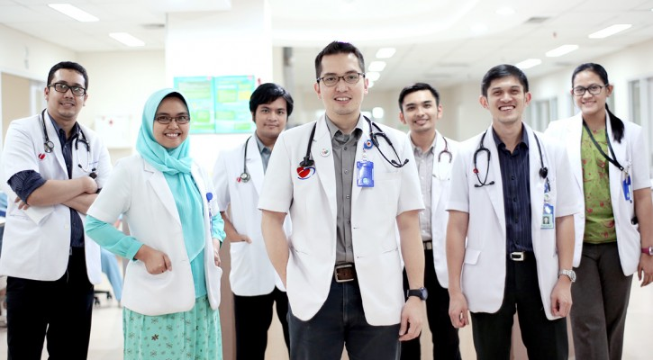

Lowongan Dokter Umum:
Kualifikasi :
-
Pendidikan Profesi Dokter
-
IPK Minimal 3,00
-
Memiliki STR Aktif
-
Memiliki sertifikat ACLS/ ATLS/ Hiperkes
-
Kirim berkas via email di :
RS Cinta Ibu Jakarta Utara
EMAIL BLM DIISI
Lowongan Perawat ICU:
Kualifikasi :
-
Pria / Wanita Berusia dibawah 30
-
IPK Minimal 3,00
-
Memiliki STR Aktif
-
Memiliki sertifikat ACLS/ ATLS/ Hiperkes
-
Kirim berkas via email di :
RS Cinta Ibu Jakarta Utara
hr.dewisantika@cintaibu.com
Kami membutuhkan tenaga medis dan non-medis untuk menjadi bagian dari fighter covid-19. Dengan kriteria Utama :
- Pendidikan minimal SMA/SMK sederajat
- Usia maks. 35 tahun.
- Sehat jasmani dan rohani
- Bersedia berinteraksi dengan pasien covid-19
- Bersedia berkerja shift 6 hari/minggu selama 3 bulan penuh.
Dengan menjadi fighter covid-19 peserta akan mendapatkan benefit :
- Pendapatan dalam hitungan perhari
- Mess/penginapan *khusus peserta diluar jakarta
- Terdaftar BPJS Kelas 1
- Menjadi prioritas dalam mendapatkan vaksinasi
- Makan 2x sehari
- Sertifikat keikutsertaan dalam kontribusi penanganan covid-19
- Surat rekomendasi *jika dibutuhkan
Informasi Lanjut Hub : 0877-8392-3713